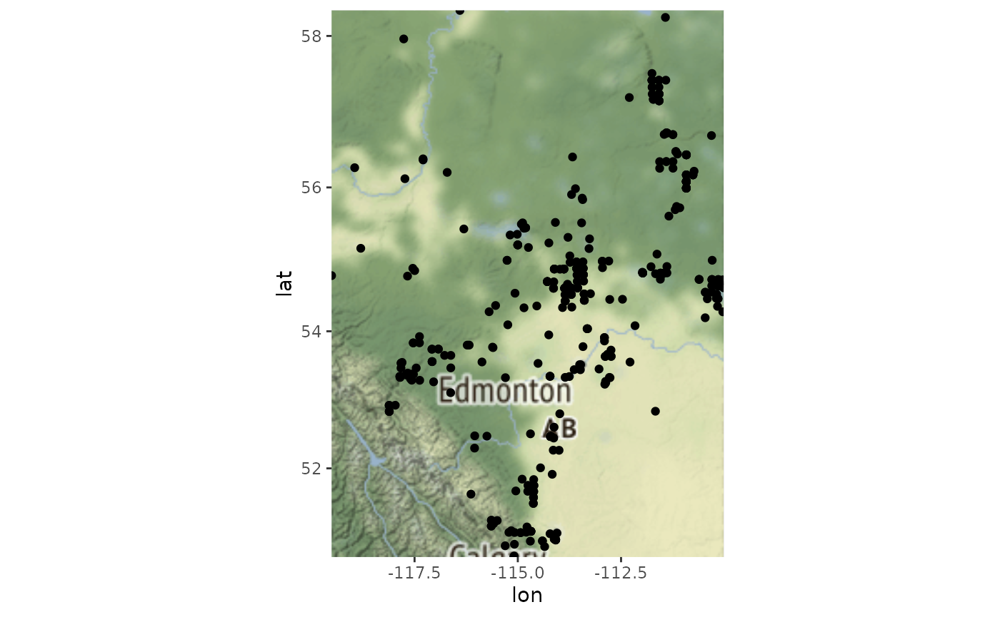
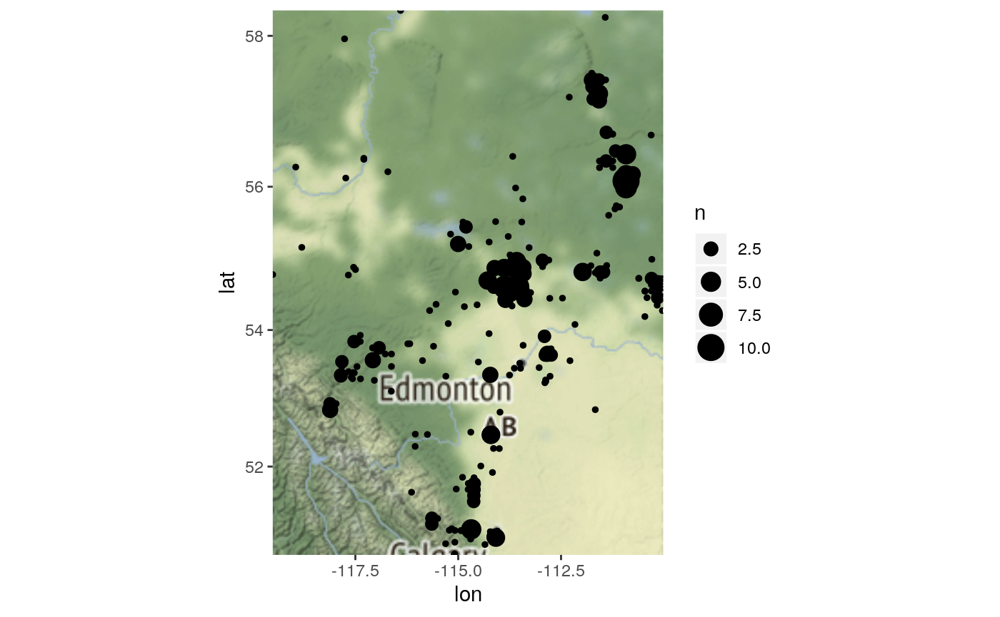
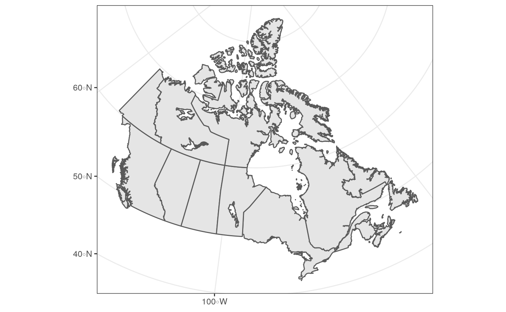
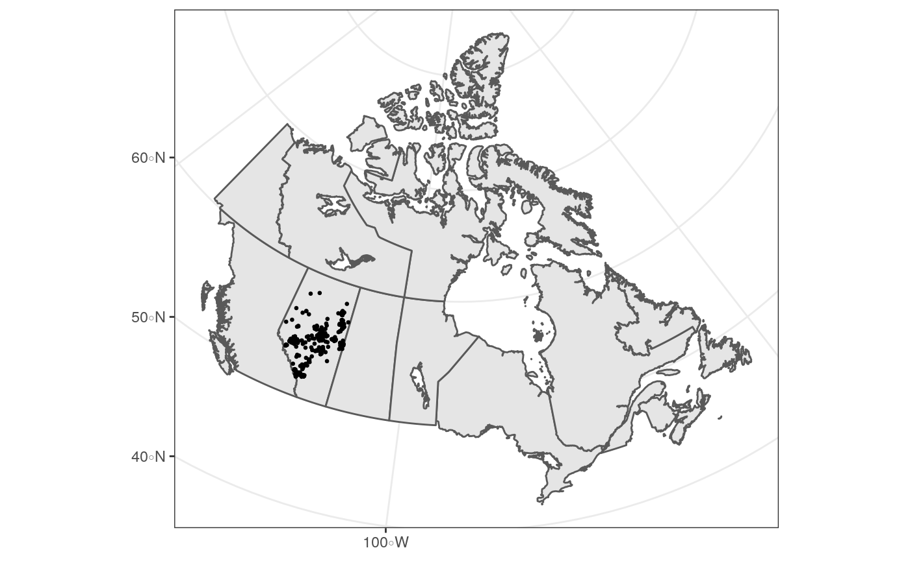
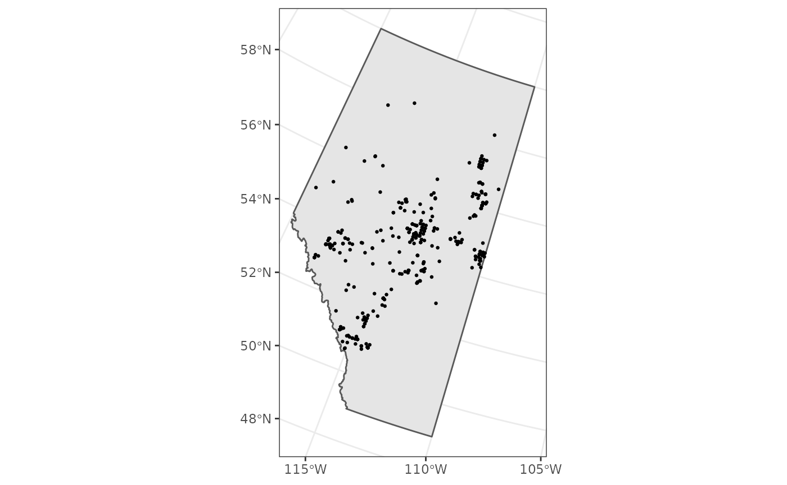
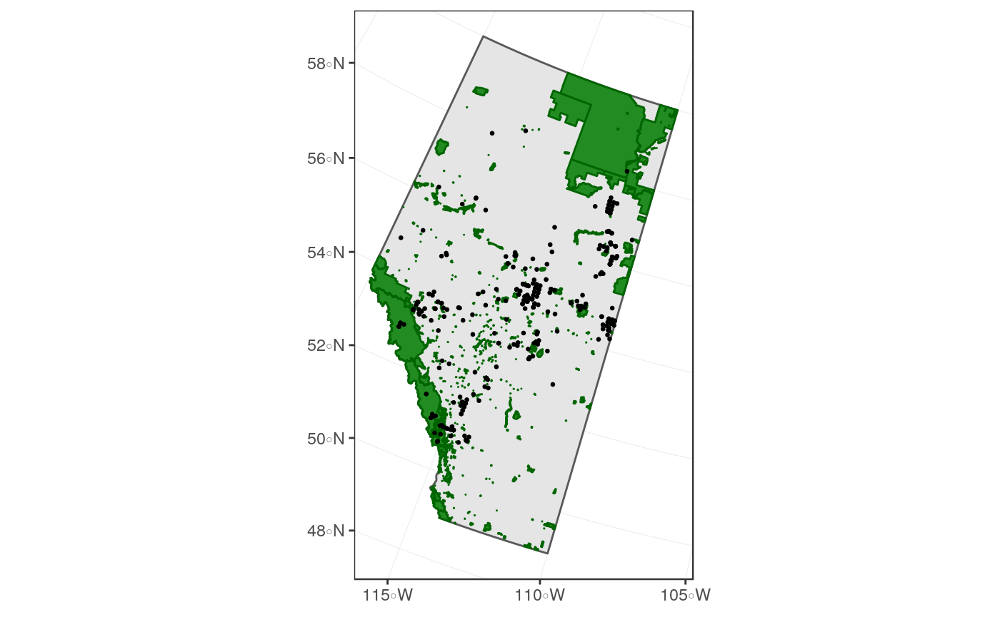
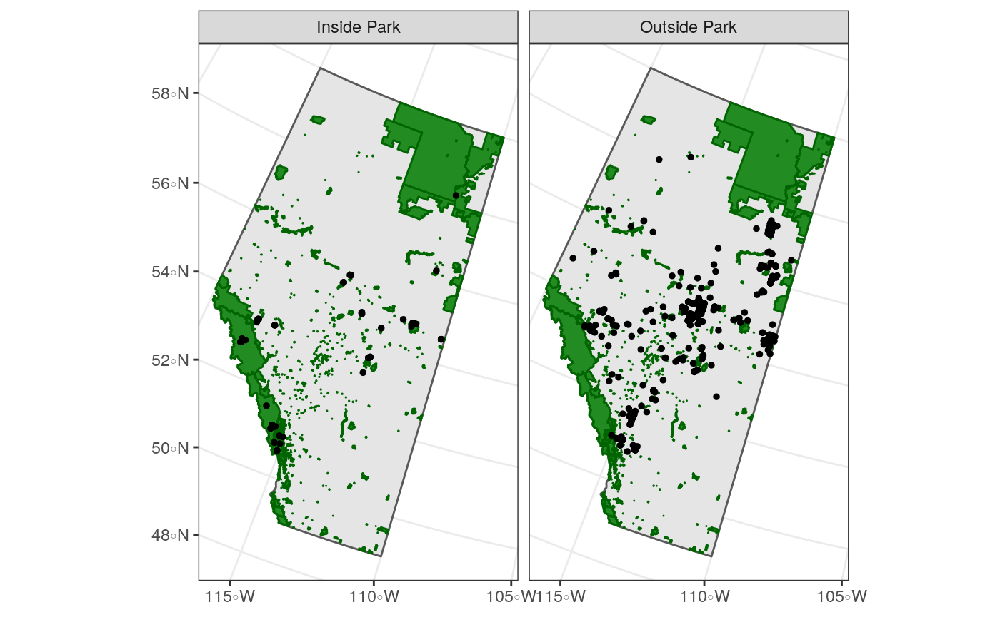
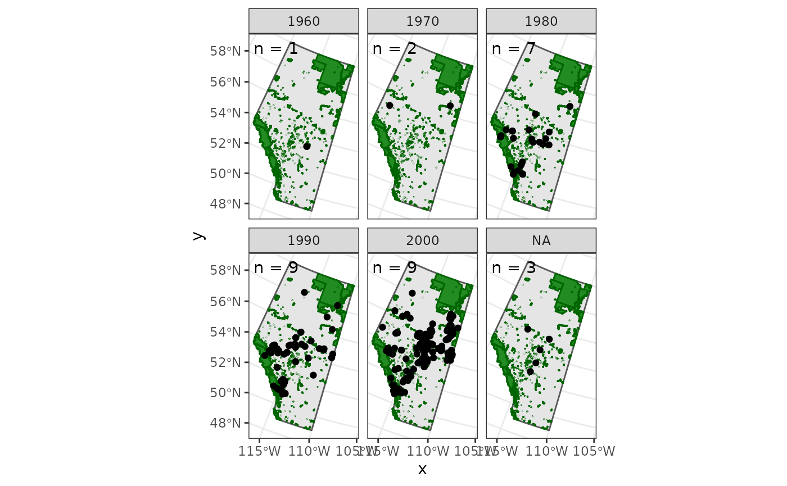

vignettes/articles/mapping-observations.Rmd
mapping-observations.RmdIn this article we’ll walk through how to create various types of maps of the observations downloaded with naturecounts to get a sense of the spatial distribution.
To do so we’re going to use the following packages:
library(naturecounts)
library(sf)
library(rnaturalearth)
library(ggmap)
library(dplyr)
library(mapview)First we’ll use download some data:
## Using filters: species (7590); fields_set (BMDE2.00-min); statprov (AB)## Collecting available records...## collection nrecords
## 1 ABATLAS1 70
## 2 ABATLAS2 103
## 3 ABBIRDRECS 202##
## Downloading records for each collection:## ABATLAS1## Records 1 to 70 / 70## ABATLAS2## Records 1 to 103 / 103## ABBIRDRECS## Records 1 to 202 / 202## GlobalUniqueIdentifier FieldNumber DurationInHours
## 1 URN:NatureAlberta:ABATLAS1:I4017-BAOW NA <NA>
## 2 URN:NatureAlberta:ABATLAS1:J5005-BAOW NA <NA>
## 3 URN:NatureAlberta:ABATLAS1:G5031-BAOW NA <NA>
## 4 URN:NatureAlberta:ABATLAS1:F4057-BAOW NA <NA>
## 5 URN:NatureAlberta:ABATLAS1:C5136-BAOW NA <NA>
## 6 URN:NatureAlberta:ABATLAS1:F4033-BAOW NA <NA>
## ObservationDescriptor5 Remarks ObservationDescriptor6 project_id
## 1 NA <NA> NA 1048
## 2 NA <NA> NA 1048
## 3 NA <NA> NA 1048
## 4 NA <NA> NA 1048
## 5 NA <NA> NA 1048
## 6 NA <NA> NA 1048
## ObservationDescriptor3 ObservationDescriptor4 ObservationDescriptor
## 1 NA NA NA
## 2 NA NA NA
## 3 NA NA NA
## 4 NA NA NA
## 5 NA NA NA
## 6 NA NA NA
## ProtocolCode ObservationCount ObservationDescriptor2 TimeIntervalEnded
## 1 NA <NA> NA NA
## 2 NA <NA> NA NA
## 3 NA <NA> NA NA
## 4 NA <NA> NA NA
## 5 NA <NA> NA NA
## 6 NA <NA> NA NA
## longitude Locality SamplingEventIdentifier collection protocol_id
## 1 -116.4019 11UNQ36 I4017 ABATLAS1 NA
## 2 -111.4258 12UVV75 J5005 ABATLAS1 NA
## 3 -115.0678 11UPL24 G5031 ABATLAS1 NA
## 4 -117.5319 11UMK66 F4057 ABATLAS1 NA
## 5 -114.9319 11UPG45 C5136 ABATLAS1 NA
## 6 -117.5319 11UMK66 F4033 ABATLAS1 NA
## SurveyAreaIdentifier SamplingEventStructure protocol_type country_code
## 1 2681 NA NA CA
## 2 6270 NA NA CA
## 3 3367 NA NA CA
## 4 1251 NA NA CA
## 5 2988 NA NA CA
## 6 1251 NA NA CA
## TimeCollected statprov_code TimeObservationsEnded species_id utm_square
## 1 NA AB NA 7590 11VNE36
## 2 NA AB NA 7590 12VVK75
## 3 NA AB NA 7590 11UPA24
## 4 NA AB NA 7590 11UMV66
## 5 NA AB NA 7590 11UPS45
## 6 NA AB NA 7590 11UMV66
## TimeObservationsStarted latitude iba_site CollectorNumber bcr
## 1 <NA> 58.32639 N/A 1728 6
## 2 <NA> 58.23722 N/A 1718 6
## 3 <NA> 54.53889 N/A 1760 6
## 4 <NA> 53.83417 N/A 1710 6
## 5 <NA> 51.03000 N/A 1375 10
## 6 <NA> 53.83417 N/A 1248 6
## survey_month CatalogNumber AllSpeciesReported survey_year ProjectCode
## 1 6 I4017-BAOW Unknown 1990 ABATLAS1
## 2 6 J5005-BAOW Unknown 1991 ABATLAS1
## 3 NA G5031-BAOW Unknown 1991 ABATLAS1
## 4 5 F4057-BAOW Unknown 1990 ABATLAS1
## 5 NA C5136-BAOW Unknown 1991 ABATLAS1
## 6 5 F4033-BAOW Unknown 1990 ABATLAS1
## RouteIdentifier AllIndividualsReported TimeIntervalsAdditive ProtocolURL
## 1 NA NA NA NA
## 2 NA NA NA NA
## 3 NA NA NA NA
## 4 NA NA NA NA
## 5 NA NA NA NA
## 6 NA NA NA NA
## NumberOfObservers SiteCode ObservationCount2 subnational2_code
## 1 1 2681 NA CA.AB.17
## 2 3 6270 NA CA.AB.16
## 3 0 3367 NA CA.AB.17
## 4 0 1251 NA CA.AB.14
## 5 0 2988 NA CA.AB.15
## 6 2 1251 NA CA.AB.14
## survey_week survey_day record_id breeding_rank ObservationCount6
## 1 2 9 225604466 10 NA
## 2 3 17 225604642 10 NA
## 3 NA NA 225610784 0 NA
## 4 1 7 225611808 60 NA
## 5 NA NA 225616490 0 NA
## 6 2 9 225617764 10 NA
## ObservationCount5 ProtocolType NoObservations ObservationCount4
## 1 NA Breeding Bird Atlas NA NA
## 2 NA Breeding Bird Atlas NA NA
## 3 NA Breeding Bird Atlas NA NA
## 4 NA Breeding Bird Atlas NA NA
## 5 NA Breeding Bird Atlas NA NA
## 6 NA Breeding Bird Atlas NA NA
## ObservationCount3 TimeIntervalStarted
## 1 NA NA
## 2 NA NA
## 3 NA NA
## 4 NA NA
## 5 NA NA
## 6 NA NAThe quickest way to look at the spatial distribution is probably to use Stamen maps through the ggmap package.
First let’s get an idea of how many distinct points there are (often multiple observations are recorded for the same location).
## [1] 375## [1] 241So we have 241 sites for 375 observations.
Next let’s convert our data to spatial data so we can extract the spatial extent. Note that we’re using CRS EPSG code of 4326 because that’s reflects unprojected, GPS data in lat/lon.
We can extract the spatial extent (bounding box) with the st_bbox() function.
## xmin ymin xmax ymax
## -119.50848 50.65669 -110.01704 58.32639Now we’re ready to make a map of the distribution of observations. First we get the baselayer map.
## Source : http://tile.stamen.com/terrain/5/5/9.png## Source : http://tile.stamen.com/terrain/5/6/9.png## Source : http://tile.stamen.com/terrain/5/5/10.png## Source : http://tile.stamen.com/terrain/5/6/10.pngNow we can add our observations. Note that for ggmap, we’ll use non-sf data frame.

Let’s count our observations for each site.

If we want to get fancy we can also create interactive maps using the mapview packages (see also the leaflet for R package).
For more complex, or detailed maps, we can use a variety of spatial data files to layer our data over maps of the area.
For this we’ll get some outlines of Canada and it’s Provinces and Territories from rnaturalearth.
canada <- ne_states(country = "canada", returnclass = "sf") %>%
st_transform(3347)
ggplot() +
theme_bw() +
geom_sf(data = canada)
Let’s add our observations (note that the data are transformed to match the projection of the first layer, here the canada data).

We can also focus on Alberta
ab <- filter(canada, name == "Alberta")
ggplot() +
theme_bw() +
geom_sf(data = ab) +
geom_sf(data = barred_owls_sf, size = 0.5)
Perhaps we should see how many of these observations were made in parks.
First we’ll download and extract the Park shapefiles available from the Alberta Parks website.
url <- "https://www.albertaparks.ca/media/2941843/parks_and_protected_areas_alberta.zip"
download.file(url = url)
unzip("parks_and_protected_areas_alberta.zip")
parks <- st_read("Parks_Protected_Areas_Alberta.shp")## Reading layer `Parks_Protected_Areas_Alberta' from data source `/home/steffi/Projects/Business/BSC/NatureCounts/naturecounts/vignettes/articles/article_files/Parks_Protected_Areas_Alberta.shp' using driver `ESRI Shapefile'
## Simple feature collection with 477 features and 17 fields
## geometry type: MULTIPOLYGON
## dimension: XY
## bbox: xmin: 170844.3 ymin: 5425575 xmax: 860845.9 ymax: 6659216
## epsg (SRID): NA
## proj4string: +proj=tmerc +lat_0=0 +lon_0=-115 +k=0.9992 +x_0=500000 +y_0=0 +datum=NAD83 +units=m +no_defsAdd this layer to our plot.
ggplot() +
theme_bw() +
geom_sf(data = ab) +
geom_sf(data = parks, colour = "darkgreen", fill = "forestgreen") +
geom_sf(data = barred_owls_sf, size = 0.5)
Well it’s actually a bit difficult to tell, there are lots of small parks!
To solve this problem, we can merge our observations with the parks and plot those inside parks separately from those outside parks.
First we’ll transform our observation data to match the CRS of parks, then we’ll join the park information to our observations, based on whether the observations overlap a park polygon (by default this is a left join), and finally we’ll create a new column outside_park that is a category for out or in the park, based on whether the observation was joined to a park name (OC_NAME).
barred_owls_sf <- barred_owls_sf %>%
st_transform(st_crs(parks)) %>%
st_join(parks) %>%
mutate(outside_park = if_else(is.na(OC_NAME), "Outside Park", "Inside Park"))And now we can see that there are quite a few, if not more, observations outside of parks than in.
ggplot() +
theme_bw() +
geom_sf(data = ab) +
geom_sf(data = parks, colour = "darkgreen", fill = "forestgreen") +
geom_sf(data = barred_owls_sf, size = 1) +
facet_wrap(~outside_park)
We might also be interested in observations over time.
First we’ll bin our yearly observations
barred_owls_sf <- mutate(barred_owls_sf,
years = cut(survey_year,
breaks = seq(1960, 2010, 10),
labels = seq(1960, 2000, 10), right = FALSE))We’ll also want to see how many sample years there are per decade.
Now we can see how Barred Owl observations change over the years
ggplot() +
theme_bw() +
geom_sf(data = ab) +
geom_sf(data = parks, colour = "darkgreen", fill = "forestgreen") +
geom_sf(data = barred_owls_sf, size = 1.5) +
geom_sf_text(data = years, x = 4427134, y = 2965275, hjust = 0, vjust = 1,
aes(label = paste0("n = ", n))) +
facet_wrap(~years)